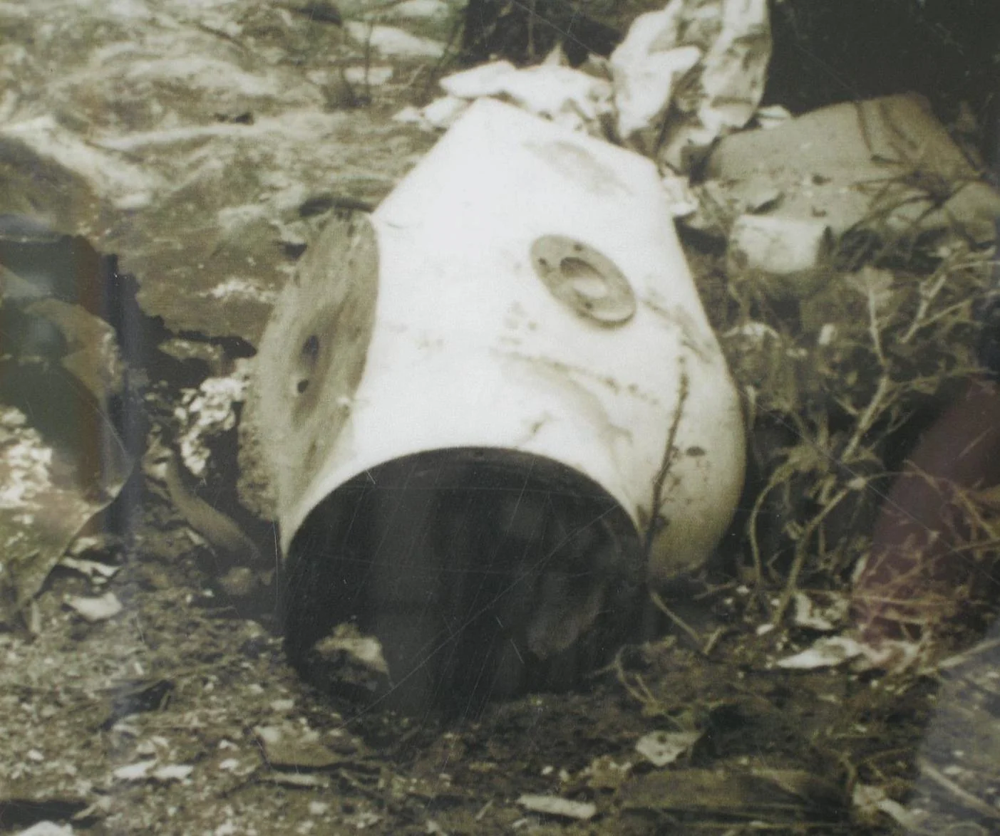
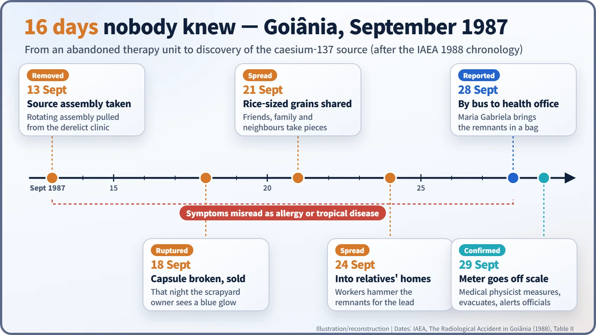
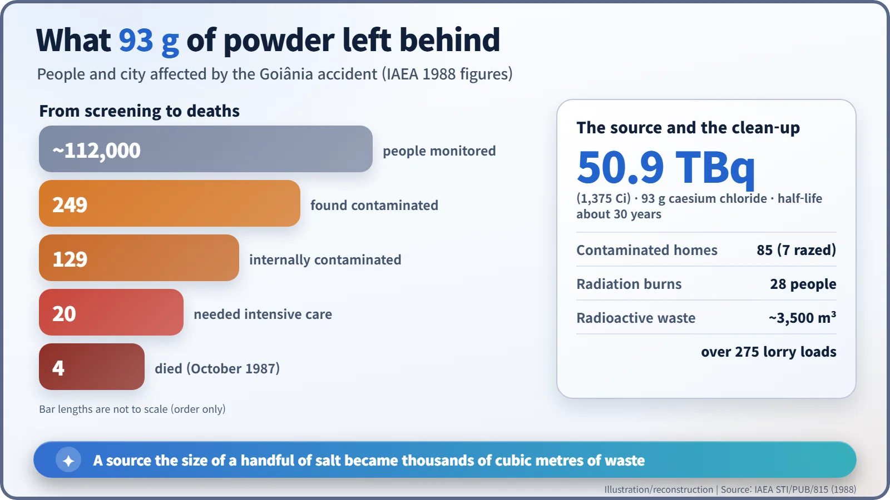
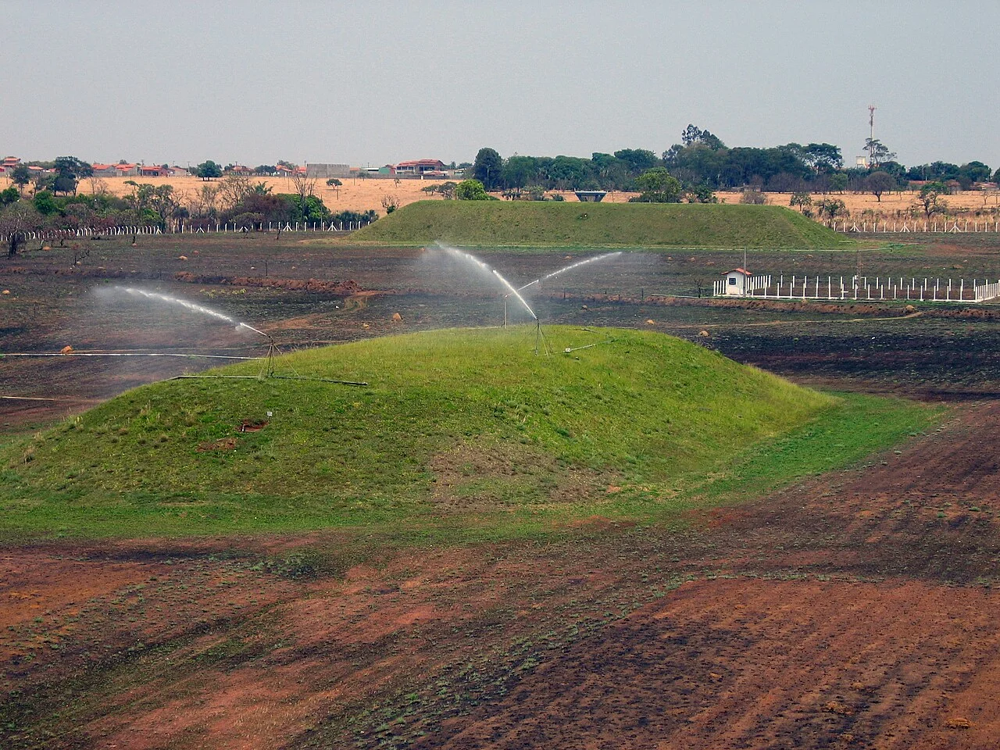

Nuclear History · 262
Ninety-Three Grams That Glowed Blue in the Dark — the Goiânia Caesium-137 Accident (1987)
A forgotten radiotherapy source, a blue glow in a scrapyard and sixteen days before anyone knew: four deaths, 249 people contaminated and 3,500 cubic metres of waste.
In September 1987 a caesium-137 source left behind in an abandoned radiotherapy clinic in Goiânia, Brazil, was broken open and its glowing blue powder shared among families for more than two weeks. Four people died, 249 were contaminated and the clean-up produced about 3,500 cubic metres of radioactive waste. No reactor was involved; the accident showed how one forgotten source can slip through gaps in regulation.
Ninety-three grams
Ninety-three grams is about a handful of table salt. In 1987, in the central Brazilian city of Goiânia, a powder of roughly that weight passed from hand to hand for more than two weeks. The cost was heavy: four people died, 249 were contaminated, and the clean-up produced about 3,500 cubic metres of radioactive waste. No reactor was involved. It remains one of the most serious radiological accidents on record. [1]
The clinic moved; the machine stayed
The powder was caesium-137 in the form of caesium chloride. Its home had been a teletherapy unit, a machine that aims a beam of gamma rays at a cancer patient. A private clinic, the Instituto Goiano de Radioterapia (IGR), had used it since Brazil's nuclear regulator, the National Nuclear Energy Commission (CNEN), approved the import of the source on 17 June 1971. [1]
At about the end of 1985 the clinic moved to new premises. It took its cobalt-60 unit and left the caesium-137 unit behind. Its licence required it to tell CNEN of such changes; no notice was given. Ownership of the old contents was disputed, most of the building was demolished, and the treatment rooms were left derelict. The source still held 50.9 terabecquerels (1,375 curies). Standing one metre from the unshielded source, a person would have received about 4.6 gray in an hour. [1]

Sixteen days in September
Around 13 September 1987, two young men who had heard that valuable scrap lay in the abandoned clinic pulled the rotating source assembly out of the machine and wheeled the shiny stainless-steel lump away in a wheelbarrow. Both soon began vomiting; a doctor put it down to something they had eaten. While taking the assembly apart at home, one of them pierced the capsule's 1 mm window with a screwdriver. [1]
On 18 September the pieces were sold to a scrapyard owner, Devair Alves Ferreira. That night he saw a blue glow coming from the capsule and brought it into the house. Relatives and neighbours came to look. On 21 September fragments "about the size of rice grains", in the words of the IAEA report, were prised out and shared among several families. On 24 September, in the home of Devair's brother, six-year-old Leide das Neves Ferreira handled fragments at the dinner table and then ate with her hands. [1]
As one person after another fell ill, Devair's wife, Maria Gabriela Ferreira, became convinced the glowing powder was to blame. On 28 September she and an employee put the remains in a bag and took a bus to the offices of the city's public health surveillance service, the Vigilância Sanitária, where she said it was "killing her family". The next morning a licensed medical physicist who happened to be visiting the city borrowed a scintillometer from the local office of NUCLEBRÁS, the state company that prospected for uranium. Switched on while he was still some distance away, it went off the scale. Assuming it was faulty, he fetched a replacement, then talked the fire brigade out of throwing the bag into a river and had the building cleared. [1]

Why it spread so far
Chemistry made the difference. Caesium chloride is a salt: it dissolves readily and crumbles easily. Grains travelled on hands, clothes, shoes and plates. People were exposed both from outside the body and, after swallowing or breathing in particles, from inside it, which is called internal contamination. With a half-life of about 30 years, caesium-137 does not fade away quickly on its own. [1]
From 30 September, officials used the city's Olympic stadium as a monitoring centre and checked about 112,000 people. Of these, 249 were contaminated, and 129 had internal as well as external contamination. Twenty needed intensive hospital care, and 46 were given Prussian blue, a drug that helps the body get rid of caesium. Even so, Leide and Maria Gabriela died on 23 October, and two scrapyard workers who had handled the remains died on 27 and 28 October. Devair, who received an estimated 7 gray, survived the acute illness and died in 1994. [1] [3]

Fear, the second injury
Fear spread as fast as the contamination. The IAEA report notes that some residents of Goiânia were shunned even by relatives, and that sales of farm produce, cloth and cotton goods from Goiás State fell by about a quarter. Accounts also describe a crowd protesting against the burial of Leide, whose body was placed in a lead-lined coffin. [1] [3]
Of 85 houses with significant contamination, seven were demolished and topsoil was scraped from large areas. Because the authorities chose very cautious action levels, roughly a tenth of the values then recommended internationally, the waste filled more than 275 lorry loads. In 1997 it was placed in a permanent near-surface repository at Abadia de Goiás, about 23 km from the city, where it lies beneath grassed mounds under CNEN monitoring. [1] [2]
The official death toll is four. A victims' association has argued that more people later died because of the contamination, and its view differs from the official count. [3]

From cradle to grave
In its detailed 1988 report the IAEA was blunt: "the professional and moral responsibility for the security of a radioactive source must lie with the person or persons licensed as responsible for it." Tracking every source from manufacture to disposal, "from cradle to grave", became a central idea in international rules on radiation-source safety. The accident was later rated Level 5 on the International Nuclear and Radiological Event Scale (INES). [1] [3]
The lesson reached warning signs too, because many people did not know what the trefoil meant. On 15 February 2007 the IAEA and the International Organization for Standardization (ISO) launched a supplementary red triangular warning sign showing radiation waves, a skull and a running figure, designed to say "keep away" even to someone who cannot read. An abandoned source in Goiânia left a question that has not gone away: who is responsible for a dangerous object, right to the end? [4]